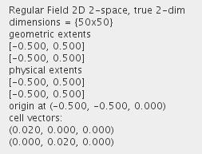
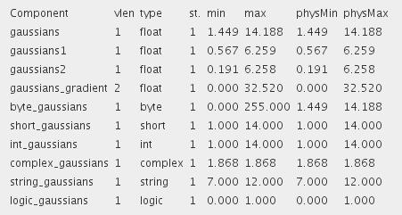
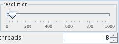

TEST REGULAR FIELD 2D
The module provides an example of 2D regular field datasets.
Output data
The output fields are regular 2D 2-space with affine geometry with several scalar and vector components.


Computation parameters

The user defines the resolution value using the slider.
Presentation parameters
Presentation parameters are described in the common interfaces section under the Presentation Panel entry.